기계정비산업기사 (2002-03-10 기출문제)
1과목: 공유압 및 자동화시스템
1. 강관에 의한 배관시 주의사항으로 옳지 않은 것은?
- 나사 전용기로 정확한 나사 가공 후 내부 청소를 깨끗이 한다.
- 실링 테이프는 1∼2산 정도 남기고 감는다.
- 원터치 니들 사용시에 누설이 없도록 충분히 끼워 넣는다.
- 액체 실을 사용할 경우 암나사 부에는 바르지 않는다.
(정답률: 38%)
2. 다음 중 한방향의 유동은 허용하나 역방향의 유동은 완전히 저지하는 밸브는?
- 체크밸브
- 교축밸브
- 릴리프밸브
- 감압밸브
(정답률: 82%)

3. 실린더의 지지방식이 아닌 것은?
- 플랜지 형
- 클래비스 형
- 트러니언 형
- 핸드 형
(정답률: 74%)
4. 제어 시퀀스를 구성할 때 오동작을 예방하는 방법이 아닌 것은?
- 신호의 지연을 방지하기 위해 배관을 가능한 길게한다.
- 가속력이 큰 경우에는 완충장치를 달아 작동력을 흡수토록 한다.
- 먼지와 이물질이 많은 경우에는 자체 정화 커버를 사용한다.
- 큰 부하나 횡방향의 부하를 받는 경우 적절한 마운팅 형태를 선택한다.
(정답률: 80%)
5. 유압 모터의 장점이 아닌 것은?
- 소형 경량으로 큰 힘을 낼 수 있다.
- 작동유의 점도 변화에 영향을 받지 않아 사용 온도범위가 넓다.
- 2개의 배관만을 사용해도 되므로 내폭성이 우수하다.
- 속도나 방향 제어가 용이하며 릴리프 밸브를 달아 기구 손상 없이 급속 정지가 가능하다.
(정답률: 67%)
6. 센서의 신호처리시 문제점이 아닌 것은?
- 잡음
- 비선형성
- 시간 지연
- 수명 단축
(정답률: 60%)
7. 다음 중 회로도의 표현 방식은 어느 것인가?
- 횡서
- 중서
- 장서
- 황서
(정답률: 68%)
8. 펌프의 토출량이 15(ℓ /min)이고 유압 실린더에서의 피스톤 직경이 32(㎜),배관경이 6(㎜)일 때 배관에서의 유속과 피스톤의 전진 속도를 구하시오?
- 배관에서의 유속 : 5.31(m/sec), 피스톤 전진속도 : 1.87(m/sec)
- 배관에서의 유속 : 8.84(m/sec), 피스톤 전진속도 : 0.31(m/sec)
- 배관에서의 유속 : 53.1(m/sec), 피스톤 전진속도 : 18.7(m/sec)
- 배관에서의 유속 : 0.88(m/sec), 피스톤 전진속도 : 0.03(m/sec)
(정답률: 50%)
9. 다품종 소량생산이 가능한 자동화를 의미하는 것은?
- 팩토리 오토메이션(factoryautomation)
- 플렉시블 오토메이션(flexibleautomation)
- 플로우 오토메이션(flowautomation)
- 오피스 오토메이션(officeautomation)
(정답률: 54%)
10. 4개의 입력요소 중 첫번째와 두번째 요소가 함께 작동되든지 세번째 요소가 작동되지 않은 상태에서 네번째 요소가 작동되었을 때 출력이 존재하는 제어기의 구성을 논리적으로 표현한 것은?
- Z=S1+S2+
 +S4
+S4 - Z=(S1+S2)·(
 +S4)
+S4) - Z=S1·S2+
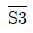
·S4 - Z=S1·S2·
 +S4
+S4
(정답률: 50%)
11. 다음 유압회로의 명칭으로 적합한 것은?
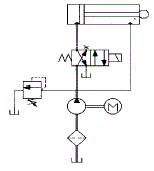
- 무부하회로
- 미터인회로
- 동조회로
- 차동회로
(정답률: 38%)
12. 그림에서 공급압력 P1=600kPa이고 압력강하 △P=100kPa라면 유량은 몇m3/h인가?
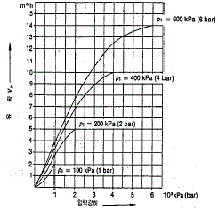
- 2
- 2.8
- 3.3
- 4
(정답률: 33%)
13. 다음 기호는 공기압 조정유닛이다가 유닛에 포함된 기기의 나열이 옳은 것은?
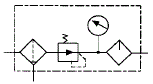
- 압력계,루브리케이터,에어 드라이어,레귤레이터
- 압력계,루브리케이터,필터,레귤레이터
- 압력계,루브리케이터,드레인 배출기,레귤레이터
- 압력계,루브리케이터,드레인 배출기 붙이 필터,레귤레이터
(정답률: 37%)
14. 프로그램 메모리 중 사용자가 자유롭게 프로그램을 쓰고 지울 수 있는 휘발성 메모리는 ?
- RAM
- ROM
- PROM
- EPROM
(정답률: 63%)
15. 직류전동기에서 운전중 브러시로부터 스파크가 일어나는 경우가 아닌 것은?
- 정류자의 브러시 접촉이 불량한 경우
- 전기자의 회로가 단선된 경우
- 전기자 리드선에 대한 결선이 잘못된 경우
- 축받이가 불량한 경우
(정답률: 45%)
16. 압력센서의 용도가 아닌 것은?
- 중량검출
- 토크검출
- 힘검출
- 성분검출
(정답률: 75%)
17. 다음 그림 중 루브리케이터의 기호는?
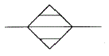
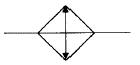
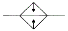
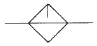
(정답률: 51%)
18. 다음 그림과 같은 11핀 계전기에서 a접점으로 사용할 수 있는 단자는?
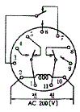
- 3번핀 -7번핀
- 9번핀 -11번핀
- 1번핀 -5번핀
- 2번핀 -10번핀
(정답률: 54%)
19. 유압장치에 부착된 압력 게이지가 40bar을 나타내었다. 이 압력은 어떤 압력인가?
- 표준 대기압
- 절대 압력
- 게이지 압력
- 상세 압력
(정답률: 65%)
20. 다음 중 압력제어밸브는 어느 것인가?
- 릴리프 밸브
- 셔틀 밸브
- 체크 밸브
- 2압 밸브
(정답률: 61%)
2과목: 설비진단관리 및 기계정비
21. 사용빈도가 비교적 안정되어 발주시기를 일정하게하고 발주 수량을 변화시키는 발주방식은?
- 정량 발주방식
- 정수 발주방식
- 정기 발주방식
- 주문점 발주방식
(정답률: 68%)
22. 송풍기의 풍량이 10(m3/sec),송풍기의 전압이 65(mmAq)의 축류 송풍기의 전압 공기동력은 약 얼마인가?
- 8.7(PS)
- 6.4(PS)
- 5.9(PS)
- 10.2(PS)
(정답률: 22%)
23. 회전기계에서 발생하는 이상현상 중 언밸런스나 베어링 결함 등의 검출에 널리 사용되는 설비진단 기법은?
- 오일분석법
- 진동법
- 응력해석법
- 페로그래피법
(정답률: 75%)
24. 정비계획 수립시 검토할 사항이 아닌 것은?
- 생산계획을 파악하고 증산체제시 정비계획을 무기한 연기한다.
- 설비의 능력을 파악한다.
- 수리형태를 파악하고 점검계획을 세운다.
- 수리요원의 능력과 인원을 검토하여 정비계획을 수립하고 필요시 외주업자를 이용한다.
(정답률: 73%)
25. 롤러베어링의 리테이너가 파손되는 가장 주요한 원인은?
- 베어링의 체결시 타격
- 사용 윤활제의 열화
- 하우징의 진원도 불량
- 축의 열 팽창
(정답률: 42%)
26. 고속 고하중 기어에 이면의 유막이 파괴되어 국부적으로 금속이 접촉하여 마찰에 의해 그 부분이 용융되어 뜯겨나가는 현상으로 마모가 활동방향에 생기는 현상은?
- 정상마모(mormalwear)
- 리징(ridging)
- 긁힘(scratching)
- 스코링(scoring)
(정답률: 59%)
27. 볼트너트의 이완방지를 위해 두께가 얇은 너트로 죄고 다음에 정규 너트로 조임하는 방식은?
- 절삭 너트에 의한 방법
- 로크 너트에 의한 방법
- 특수 너트에 의한 방법
- 홈붙이 너트에 의한 방법
(정답률: 67%)
28. 다음 중 축의 수리를 정비현장에서 하는 것이 무리인 경우는? (문제 복원 오류로 보기 내용이 정확하지 않습니다. 정확한 보기 내용을 아시는 분께서는 오류신고 또는 게시판에 작성 부탁드립니다.)
- 회전속도가 500rpm이하이며 ,베어링간격이 비교적 긴축이 휘어져 있을 때
- 경하중 기계에서 축의 흔들림 때문에 진동이나 베어링 발열이 있을 경우
- 베어링 중간부의 풀리 스프라킷이 흔들려 소리를 낼 때
- 100製絨1m정도의 축이 구부러졌을 때
(정답률: 48%)
29. 설비열화를 방지하기위한 조치로서 부적절한 것은?
- 전원스위치를 정기적으로 교체한다
- 패킹,시일 등을 정기적으로 점검한다
- 가동전에 베어링,기어 등 회전부에 윤활유를 공급한다
- 오일휠터를 규정된 시간마다 정기적으로 교환한다
(정답률: 72%)
30. 자유도계에서 기초에 미치는 진동전달률 T를 구하는 식으로 알맞는 것은? (단, f:강제진동수, fn:고유진동수)
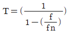
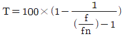
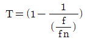
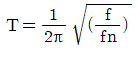
(정답률: 40%)
31. 체결용 부품중에서 간단,신속히 체결되고 결합 방향에만 힘이 가해지는 부분에 적합한 체결 부품은?
- 핀
- 코터
- 키이
- 리벳
(정답률: 42%)
32. 설비의 점검 및 검사,일상보전 및 수리에 관한 기준이되는 사항을 규정한 것은?
- 설비성능 표준
- 설비보존 표준
- 기기사양기준
- 기기수급표준
(정답률: 70%)
33. 송풍기(blower)의 중심맞추기(centering)에 일반적으로사용되는 게이지는?
- 블록 게이지
- 다이얼 게이지
- 센터 게이지
- 높이 게이지
(정답률: 56%)
34. 큐노형(cunotype)여과기에서 불순물 입자를 여과할 수 있는 정도는 몇 mm인가?
- 1
- 0.1
- 0.01
- 0.001
(정답률: 50%)
35. 차음벽에 의한 저주파소음 차단과 가장 관계가 깊은 것은?
- 차음벽의 무게
- 재료의 강성
- 재료의 내부댐핑
- 차음벽의 공진주파수
(정답률: 41%)
36. 키 맞춤을 위해 보스의 구멍 지름을 포함한 홈의 깊이를 측정할 때 사용되는 공구는?
- 버어니어 캘리퍼스
- 마이크로미터
- 강철자
- 틈새게이지
(정답률: 70%)
37. 설비가 고장을 일으키면 생산이나,서비스에 지장을 초래하므로 유해한 성능저하를 발견하여 초기상태에서 이러한 상태를 제거 또는 복구시키기 위해 행해지는 보전방식은?
- 사후보전(BM)
- 예방보전(PM)
- 개량보전(CM)
- 보전예방(MP)
(정답률: 66%)
38. 윤활제의 종류에서 액상 윤활제인 것은?
- 유압 작동유
- 산화 알루미나
- 그래파이트
- 기어 컴파운드
(정답률: 70%)
39. 어느 공장의 월 가동수가 20일인 장비가 설비고장과 작업 고장에 의한 설비 휴지시간이 1개월에 10시간이 걸리면 실제 가동율은 몇 ％인가? (단, 1일 가동시간은 8시간 이다.)
- 93.75
- 96.25
- 95.3
- 91.8
(정답률: 32%)
40. 그리스를 장기간 저장할 경우 또는 사용 중에 기름이 분리 되는 현상은?
- 안정도
- 이유도
- 중화도
- 주도
(정답률: 48%)
3과목: 공업계측 및 전기전자제어
41. 프로그램 입력장치를 이용하여 시퀀스프로그램의 내용을 PLC메모리에 기억시키는 작업은?
- 로딩
- 코딩
- 시뮬레이션
- 메모리할당
(정답률: 32%)
42. 미리 설정된 프로그램대로 조작하는 제어 방식은 다음 중 어느 것인가?
- 시퀀스 제어
- 피드백 제어
- 순차 제어
- 프로세서 제어
(정답률: 58%)
43. 두 코일의 자체 인덕턴스를 L1,L2결합계수를 K라 할 때 상호 인덕턴스는 어떻게 나타내는가?
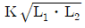
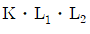
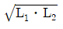
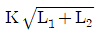
(정답률: 47%)
44. 변압기의 호흡작용에 의한 변압기유의 열화를 방지하기 위하여 변압기 상부에 설치하는 것은?
- 통기장치
- 배수밸브
- 방충 안전장치
- 콘서베이터
(정답률: 38%)
45. 부궤환 증폭기의 특징이 아닌 것은?
- 주파수 특성 개선
- 왜곡 감소
- 잡음 감소
- 안정도 불변
(정답률: 46%)
46. 계전기의 기기 기호 중 전류 계전기의 문자기호는?
- R
- VR
- CR
- GR
(정답률: 46%)
47. 참값 25.00A인 직류전류를 측정하여 24.85A의 값을 얻었다가 측정치의 백분율 오차는?
- 0.3
- 0.6
- 0.9
- 1.0
(정답률: 45%)
48. 다음 그림의 회로도 명칭은？
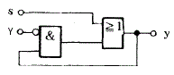
- 촌동 회로
- 병렬 회로
- 세트 우선회로
- 리셋 우선회로
(정답률: 45%)
49. 다음중 회로시험기를 사용하여 측정할 때 주의할 점 중 잘못된 것은?
- 측정할 양에 알맞는 계기를 사용한다.
- 직류용 계기를 사용할 때 전원의 극성에 주의한다.
- 측정시 지침은 최대 측정범위를 넘도록 조정한다.
- 배율 선택 스위치는 측정값에 알맞게 조절한다.
(정답률: 69%)
50. 다음 그림은 구동부의 약도이다이에 해당하는 것은?
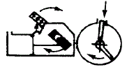
- 실린더식 스프링형
- 다이어 프램식 스프링형
- 전동모터식 스프링리스형
- 전동유압 서보식 스프링형
(정답률: 45%)
51. 다음 그림에서 전자 릴레이 회로도 작성법과 거리가 먼 것은？
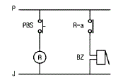
- 상측 제어모선에서 릴레이 a접점 기호를 하측 제어 모선에 버저의 기호를 그린다.
- 전자 릴레이 a접점은 접속선 왼쪽에 표시한다
- a접점 기호에는 전자 릴레이 R에 소속되어 있으므로 R의 문자기호를 병기한다.
- 버저의 기호에는 BZ의 문자기호를 기입한다
(정답률: 45%)
52. 그림과 같은 슬라이드 브리지에서 ℓ 1=25,ℓ 2=75일때,검류계의 지침이 0을 지시하였다면 X의 값은?
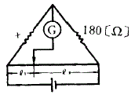
- 540[Ω]
- 135[Ω]
- 60[Ω]
- 45[Ω]
(정답률: 45%)
53. 다음 중 역수의 관계가 잘못 짝지어진 것은?
- 저항 R-컨덕턴스 G
- 임피던스 Z-어드미턴스 Y
- 리액턴스 X-서셉턴스 B
- 전압 V-전력 P
(정답률: 51%)
54. 제어 시스템의 구성 중 조작부의 구비조건으로 거리가 먼 것은?
- 응답성 좋고 히스테리시스가 클 것
- 제어신호에 정확히 동작할 것
- 주위환경과 사용조건에 충분히 견딜 것
- 보수점검이 용이할 것
(정답률: 64%)
55. 다음 심볼 기호의 명칭은?
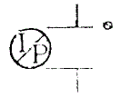
- 전공 변환기
- 온도검출기
- 액면스위치
- 유량조절계
(정답률: 49%)
56. JK-FF에서 J=1,K=1이면 동작상태는 어떻게 되는가?
- 변하지 않는다
- set상태
- 반전된다
- reset상태
(정답률: 50%)
57. 되먹임 제어(feedbackcontrol)에서 반드시 필요한 장치는?
- 구동기
- 조작기
- 검출기
- 비교기
(정답률: 58%)
58. 조절계의 제어동작 중 단일 루프 제어계에 속하지 않는 것은?
- 비율제어
- 비례제어
- 적분제어
- 미분제어
(정답률: 53%)
59. 3상 유도전동기의 정·역 운전회로에서 정·역 동시 투입에 의한 단락사고를 방지하기 위하여 사용하는 회로는?
- 인터록 회로
- 자기유지 회로
- 플러깅 회로
- 시한동작 회로
(정답률: 69%)
60. 다음 중 열전대 조합으로 많이 사용하지 않는 것은?
- 백금로듐 -백금
- 크로멜 -알루멜
- 철 -콘스탄탄
- 구리 -알루멜
(정답률: 52%)
4과목: 기계정비 일반
61. 풀리장치에서 벨트의 장력이 너무 크게 되면 어떤 현상이 일어나는가?
- 미끄럼이 크게 된다
- 전동이 불확실하게 된다
- 베어링의 마찰손실이 크게 된다
- 회전력이 감소 된다
(정답률: 50%)
62. 그림과 같은 스프링 장치에서 각 스프링의 상수 K1=4㎏f/㎝,K2=5㎏f/㎝,K3=6㎏f/㎝이며 하중 방향의 처짐δ =150㎜일 때,하중 P는 얼마인가?
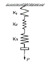
- P=251㎏f
- P=225㎏f
- P=31.4㎏f
- P=24.3㎏f
(정답률: 23%)
63. 비철계 초소성 재료 중 최대의 연신을 갖는 합금은?
- Ag합금
- Co합금
- Bi합금
- Cd합금
(정답률: 19%)
64. 유니파이나사의 나사산 각도는?
- 55°
- 60°
- 30°
- 50°
(정답률: 59%)
65. 다음 축이음 중 두축이 서로 평행하고 거리가 짧고 교차 하지 않는 경우에 사용하는 기계요소는?
- 플랜지 커플링
- 맞물림 클러치
- 올덤 커플링
- 유니버설 조인트
(정답률: 41%)
66. 보통주철은 주조한 그대로 사용되는 일이 많으나 최근에는 각종 열처리를 실시하여 재료의 성질을 개선한다. 다음 중 관계과 가장 먼 것은?
- 전연성 향상
- 피로강도 향상
- 내마모성 향상
- 피삭성 및 치수안정성 향상
(정답률: 35%)
67. 두개의 기어가 서로 맞물려서 운동을 전달하고 있다회전 방향이 같고 감속비가 큰 기어는 어느 것인가?
- 헬리컬 기어
- 웜기어
- 내접기어
- 하이포이드 기어
(정답률: 22%)
68. 탄소강은 일반적으로 200∼300℃ 부근에서 상온보다 더욱 취약한 성질을 갖는다이것을 무엇이라 하는가?
- 저온취성
- 청열취성
- 고온취성
- 적열취성
(정답률: 31%)
69. 기중기 등에서 물체를 내릴 때 하중 자신에 의하여 브레이크 작용을 행하여 속도를 억제하는 것은?
- 블록 브레이크
- 밴드 브레이크
- 자동 하중 브레이크
- 축압 브레이크
(정답률: 55%)
70. 철의 동소체로서 A3변태에서 A4변태 사이에 있는 철은?
- α -Fe
- β -Fe
- γ-Fe
- δ -Fe
(정답률: 41%)
71. 묻힘키이(sunkkey)에서 생기는 전단응력을 τ ,키이에 생기는 압축응력을 σ c라 하여 τ /σc=1/2일때 키의 폭 b와 높이 h와의 관계를 가장 옳게 설명한 것은?
- 폭이 높이 보다 크다.
- 폭이 높이 보다 작다.
- 폭과 높이가 같다.
- 폭과 높이는 반비례 한다.
(정답률: 25%)
72. 반복 하중을 가하여 재료의 강도를 평가하는 시험 방법은 다음 중 어느 것인가?
- 충격시험
- 인장시험
- 굽힘시험
- 피로시험
(정답률: 46%)
73. 풀림을 하는 목적을 설명한 것 중 틀린 사항은?
- 점성을 제거
- 가공 중 응력제거
- 가공 후 변형제거
- 재료 내부에 생긴 응력제거
(정답률: 47%)
74. 400rpm으로 전동축을 지지하고 있는 미끄럼 베어링에서 저어널의 지름 d =6㎝, 저어널의 길이 ℓ =10㎝이고, W=420㎏f의 레디얼 하중이 작용할 때,베어링 압력은?
- 0.⑤㎏f/㎜2
- 0.06㎏f/㎜2
- 0.07㎏f/㎜2
- 0.08㎏f/㎜2
(정답률: 26%)
75. 염기성 전로에 사용되는 내화벽돌 재료는 어느 것인가?
- 샤모트 벽돌
- 규석 벽돌
- 고알루미나 벽돌
- 마그네시아 벽돌
(정답률: 38%)
76. 그림과 같은 용접이음에서 용접부에 발생하는 인장응력은 얼마인가?
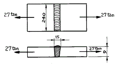
- 7.5㎏f/㎜2
- 12.5㎏f/㎜2
- 18.8㎏f/㎜2
- 25.6㎏f/㎜2
(정답률: 32%)
77. 원뿔면 또는 원통면 밸브시트 안에서 밸브가 회전하고 유체가 그 회전축에 직각으로 유동하는 구조로 된 밸브는?
- 리프트밸브
- 슬라이딩밸브
- 회전밸브
- 버터플라이밸브
(정답률: 33%)
78. 다음중 불변강이 아닌것은?
- 인바
- 엘린바
- 인코넬
- 슈퍼인바
(정답률: 49%)
79. 펄라이트(Pearlite)의 생성되는 과정에서 틀린 것은?
- Fe3C의 핵이 성장한다.
- α 가 생긴 입자에 Fe3C가 생긴다.
- γ의 결정립계에 Fe3C의 핵이 생긴다.
- Fe3C의 주위에 γ 가 생긴다.
(정답률: 27%)
80. 다음 중 고속도강과 가장 관계가 먼 사항은?
- W-Cr-V(18-4-1)계가 대표적이다.
- 500-600℃로 뜨임하면 급격히 연화(軟化)된다.
- W계와 Mo계 두가지로 크게 나뉜다.
- 각종 공구용으로 이용된다.
(정답률: 39%)